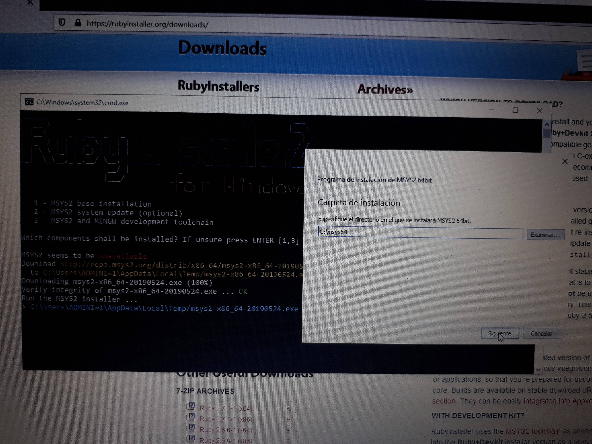
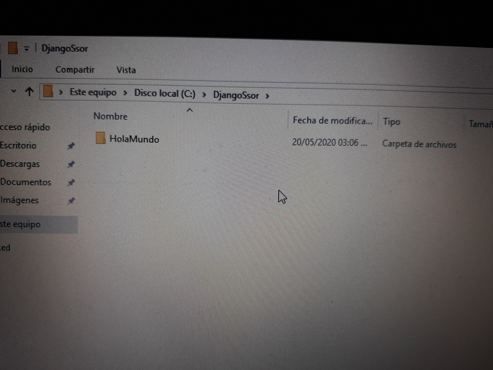

Seminario de Solución de Problemas de Sistemas Operativos de Red
D05
ACTIVIDAD 10

Instalar un sistema en django con bases de datos y uno en rubi on rails con bases de datos y asignar diferentes permisos de acceso a los grupos de usuarios en cada sistema.
Ruby
Django
Grupos
Ruby
Lo primero que tenemos que hacer es descargar ruby on rails.
Para descargarlo solo has click
aquí
Descargamos la última versión estable.
Una vez descargado damos doble click en el instalador.
Aceptamos los términos y condiciones.
Podemos elegir la ruta, en este caso la dejamos por defecto y agregamos el Path para posteriormente hacer click en intall
Ahora solo basta con esperar a que se realice la instalación.
Una vez la instalación se complete, damos click en terminar.
Abrimos el terminal de Ruby y elegimos la opción 3.
Esperamos a que el proceso termine.
Cuando el proceso termine, se abrira una ventana, solo basta con darle en siguiente.
Dejamos todo por defecto y damos click en siguiente.
Damos en siguiente una vez más.
Esperamos a que el programa se instale.
Una vez el programa se instale, damos click en finalizar.

Una vez que se instale mingw elegimos la opción 2 en nuestra terminal.
Esperamos a que se actualize el sistema.
Cuando la instalación termine, usamos el comando "gem list" para verificar la instalación de las gemas.
Ahora procedemos a instalar SQLite con el comando "gem install sqlite3".
Una vez que la instalación de SQLite termine, instalamos rails con el comando "gem install rails".
Ahora necesitamos instalar Node.js para ello hacemos click aquí
Una vez descargado el ejecutable, lo buscamos y hacemos doble click en él.
Damos click en next.
Aceptamos los términos y condiciones.
Dejamos el directorio por defecto y damos click en next.
Dejamos todo por defecto y damos click en next.
Volvemos a dar click en next.
Damos click en instalar.
Esperamos a que la instalación termine.
Damos click en finalizar.
Ahora necesitamos instalar Yarn para ello damos click aquí
Buscamos el ejecutable y damos doble click.
Damos click en siguiente.
Aceptamos los términos y condiciones.
Damos click en siguiente.
Iniciamos la instalación.
La instalación es bastante rápida, cuando termine damos click en Finish.
Creamos nuestro sistema y lo hechamos a andar.

Django
Lo primero que tenemos que hacer es instalar Python, para ello damos click aquí
Una vez descargado el instalador le damos doble click para ejecutarlo.
Marcamos las casillas de abajo y damos click en install now.
Esperamos a que la instalación se complete.
Damos click en close una vez que la intslación haya finalizado.

Abrimos la consola y usamos el comando "pip3 install django" para iniciar la instalación.
Una vez que la instalación términe nos movemos a la carpeta donde crearemos el proyecto con el comando "django-admin startproyect NombreDelProyecto".
Nos movemos a la carpeta y corremos el servicio con el comando "py -3 manage.py runserver".
Aquí se muestra Django en ejecución.
Creación de Usuarios y Grupos
Ahora daremos permisos de grupos y usuarios, para eso damos click derecho en la carpeta y elegimos la opción de Propiedades.
Nos vamos a seguridad y en nombres de grupos y usuarios damos click en editar
Agregamos el grupo y damos click en aceptar.
Damos los permisos al grupo.
Agregamos el grupo de Ruby.
Le quitamos todos los permisos al grupo de Ruby pues este no podrá acceder al proyecto de Django.
Del mismo modo configurmaos los permisos del proyecto de Ruby.
Cerramos sesión.
Iniciamos sesión como un usuario de Django.
Intentamos acceder al proyecto de Ruby. Recordemos que no tenemos permisos.
Efectivamente los permisos de grupo nos impiden acceder.
De la misma forma si nos es posible acceder al proyecto donde si contamos con permisos.
